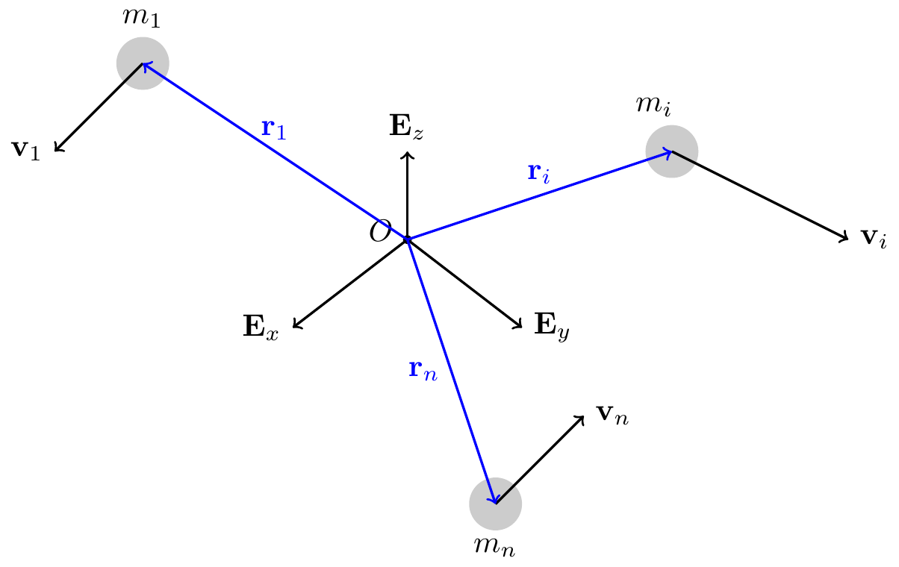
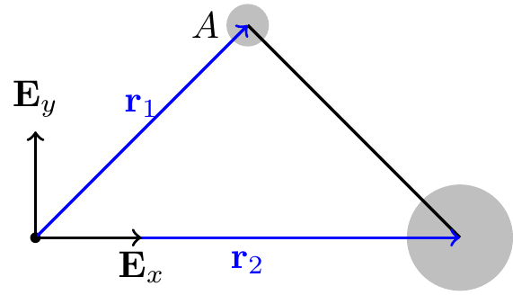

19 System of Particles
Consider a system of \(n\) particles. A typical particle has mass \(m_i\), position vector \({\bf r}_i\) relative to \(O\), velocity \({\bf v}_i = \dot{\bf r}_i\), acceleration \({\bf a}_i = \dot{\bf v}_i\), linear momentum \({\bf G}_i = m_i{\bf v}_i\), angular momentum \({\bf H}^P_i = ({\bf r}_i-{\bf r}_P)\times{\bf G}_i\), and kinetic energy \(T_i = \frac{1}{2}m_i{\bf v}_i\cdot{\bf v}_i\).
In this chapter, we define analogous system-level quantities and derive the balance laws for the system from the balance law for each individual particle.
19.1 Center of Mass
TipThink!
Question: What is the position vector of the center of mass of a system of particles?
NoteAnswer
The center of mass \(C\) has position vector \[\begin{align} {\bf r}_C = \frac{1}{m}\sum_{k=1}^n m_k{\bf r}_k, \end{align}\] where \(m = \sum_{k=1}^n m_k\) is the total mass.
WarningExample
Question: Consider an unsymmetrical dumbbell: particle 1 of mass \(m\) and particle 2 of mass \(3m\) connected by a massless rigid rod, with \[\begin{align*} {\bf r}_1 = {\bf E}_x+{\bf E}_y, \qquad {\bf r}_2 = 2{\bf E}_x. \end{align*}\] Calculate \({\bf r}_C\). Is \(C\) located on the dumbbell?

NoteAnswer
\[\begin{align*} {\bf r}_C = \frac{m{\bf r}_1+3m{\bf r}_2}{m+3m} = \frac{{\bf r}_1+3{\bf r}_2}{4} = \frac{7}{4}{\bf E}_x+\frac{1}{4}{\bf E}_y. \end{align*}\] We can check that \(C\) lies on the line connecting \(m_1\) and \(m_2\).
Note the useful identity: relative to any reference point \(A\), \[\begin{align} {\bf r}_{C/A} = \frac{\sum_i m_i{\bf r}_{i/A}}{\sum_i m_i}. \end{align}\]
TipThink!
Question: Show that \(\sum_{k=1}^n m_k({\bf r}_C-{\bf r}_k) = {\bf 0}\) and \(\sum_{k=1}^n m_k({\bf v}_C-{\bf v}_k) = {\bf 0}\).
NoteAnswer
Both follow directly from the definition of the center of mass.
Differentiating the position of the center of mass: \[\begin{align} {\bf v}_C = \frac{1}{m}\sum_{k=1}^n m_k{\bf v}_k = \frac{1}{m}\sum_{k=1}^n{\bf G}_k. \end{align}\]
19.2 Linear Momentum
The linear momentum of the system is \[\begin{align} {\bf G} = \sum_{k=1}^n{\bf G}_k = m{\bf v}_C. \end{align}\] The linear momentum of the system equals that of its center of mass.
19.3 Angular Momentum
The angular momentum \({\bf H}^P\) of the system relative to a point \(P\) is: \[\begin{align} {\bf H}^P = \sum_{k=1}^n({\bf r}_k-{\bf r}_P)\times m_k{\bf v}_k = {\bf H}^C+({\bf r}_C-{\bf r}_P)\times{\bf G}, \end{align}\] where \[\begin{align} {\bf H}^C = \sum_{k=1}^n({\bf r}_k-{\bf r}_C)\times m_k{\bf v}_k = \sum_{k=1}^n({\bf r}_k-{\bf r}_C)\times m_k({\bf v}_k-{\bf v}_C). \end{align}\]
TipThink!
Question: Show that \(\sum_{k=1}^n({\bf r}_k-{\bf r}_P)\times m_k{\bf v}_k = {\bf H}^C+({\bf r}_C-{\bf r}_P)\times{\bf G}\).
NoteAnswer
Introduce \({\bf r}_C-{\bf r}_C\) inside the sum and expand.
19.4 Kinetic Energy
The kinetic energy of the system is: \[\begin{align} T = \sum_{k=1}^n\frac{1}{2}m_k{\bf v}_k\cdot{\bf v}_k = \frac{1}{2}m{\bf v}_C\cdot{\bf v}_C+\frac{1}{2}\sum_{k=1}^n m_k({\bf v}_k-{\bf v}_C)\cdot({\bf v}_k-{\bf v}_C). \end{align}\] The kinetic energy splits into the kinetic energy of the center of mass plus the kinetic energy relative to the center of mass. In general, \(T \neq \frac{1}{2}m{\bf v}_C\cdot{\bf v}_C\).
TipThink!
Question: Prove \(\sum_{k=1}^n\frac{1}{2}m_k{\bf v}_k\cdot{\bf v}_k = \frac{1}{2}m{\bf v}_C\cdot{\bf v}_C+\frac{1}{2}\sum_{k=1}^n m_k({\bf v}_k-{\bf v}_C)\cdot({\bf v}_k-{\bf v}_C)\).
NoteAnswer
Add \({\bf v}_C-{\bf v}_C\) to each \({\bf v}_k\), expand, and use \(\sum m_k({\bf v}_k-{\bf v}_C) = {\bf 0}\).
19.5 Kinetics: Balance of Linear Momentum
Starting from \({\bf F}_i = m_i{\bf a}_i\) for each particle and summing: \[\begin{align} {\bf F} = \sum_{k=1}^n{\bf F}_k = m{\bf a}_C. \end{align}\] The resultant external force equals the total mass times the acceleration of the center of mass.
ImportantNote!
The conditions for conservation of linear momentum of a system (completely or along a direction) are analogous to those for a single particle: \({\bf F}\cdot{\bf c} = 0\) for a constant \({\bf c}\).
19.6 Kinetics: Balance of Angular Momentum
Starting from \({\bf H}^P = \sum_{k=1}^n({\bf r}_k-{\bf r}_P)\times m_k{\bf v}_k\), the time derivative is: \[\begin{align} \dot{\bf H}^P = \sum_{k=1}^n({\bf r}_k-{\bf r}_P)\times{\bf F}_k-{\bf v}_P\times{\bf G} = {\bf M}^P-{\bf v}_P\times{\bf G}. \end{align}\]
ImportantNote!
\(\dot{\bf H}^P\) is not necessarily equal to \({\bf M}^P\). The two agree only in special cases.
Two important special cases:
- \(P = O\) (fixed origin, \({\bf v}_O = {\bf 0}\)): \(\dot{\bf H}^O = {\bf M}^O = \sum_{k=1}^n{\bf r}_k\times{\bf F}_k\).
- \(P = C\) (center of mass, \({\bf v}_C\times{\bf G} = {\bf 0}\)): \(\dot{\bf H}^C = {\bf M}^C = \sum_{k=1}^n({\bf r}_k-{\bf r}_C)\times{\bf F}_k\).
ImportantNote!
The conditions for conservation of angular momentum of a system are analogous to those for a single particle.
Example: A pendulum suspended from a cart on smooth horizontal rails — write the BoAM in 3 forms.
19.7 Work-Energy Theorem
The work-energy theorem for a system of particles is: \[\begin{align} \dot{T} = \sum_{k=1}^n{\bf F}_k\cdot{\bf v}_k, \end{align}\] and for energy conservation (with nonconservative forces \({\bf F}_{nc_k}\)): \[\begin{align} \dot{E} = \sum_{k=1}^n{\bf F}_{nc_k}\cdot{\bf v}_k. \end{align}\] Integrating: \[\begin{align} T(t_2)-T(t_1) = \sum_{k=1}^n W_{{\bf F}_k,12}, \qquad W_{{\bf F}_k,12} = \int_{t_1}^{t_2}{\bf F}_k\cdot{\bf v}_k\,dt. \end{align}\]
ImportantNote!
The work of a force is the integral of the force dotted with the velocity of the point of application of the force.
WarningExample
Question: Consider the unsymmetrical dumbbell (particle 1 of mass \(m\), particle 2 of mass \(3m\), massless rod) moving in the smooth \(\{{\bf E}_x,{\bf E}_y\}\) plane with gravity along \(-{\bf E}_z\). Is the energy conserved?
NoteAnswer
Drawing the FBDs of both masses: the only forces are gravity (conservative) and the constraint force in the rod (does no work on the system, since it is internal and the rod is rigid). Hence the total energy is conserved.
19.8 Summary
Center of mass: \(\mathbf{r}_C = \frac{\sum m_i \mathbf{r}_i}{m}\).
BoLM for system: \(\mathbf{F}_{\mathrm{ext}} = m\mathbf{a}_C\).
BoAM for system: \(\dot{\mathbf{H}}^P = \mathbf{M}^P - \mathbf{v}_P\times\mathbf{G}\); simplifies to \(\mathbf{M}^O=\dot{\mathbf{H}}^O\) (fixed \(O\)) or \(\mathbf{M}^C=\dot{\mathbf{H}}^C\) (center of mass).
Kinetic energy: \(T = \tfrac{1}{2}m\mathbf{v}_C\cdot\mathbf{v}_C + \tfrac{1}{2}\sum m_i(\mathbf{v}_i-\mathbf{v}_C)\cdot(\mathbf{v}_i-\mathbf{v}_C)\).
19.9 Exercises
The following problems are from Set 14 – System of Particles.
1. [MKB 03-168] Show that during the (very brief) collision, the linear momentum of the bullet–pendulum system is conserved. (ans. \(\theta=20.7^\circ\), \(n=99.8\%\))

2. [MKB 03-178] Use the integral form of the BoAM; choose the origin at the green base. (ans. \(\dot\theta=26.0\) rad/s)

3. [04-008] Take an appropriate cut in the rope. (ans. \(T=58.3\) lb)
4. [04-009] (ans. \(D_x=1.288\) lb left, \(D_y=35.5\) lb up, \(N_E=25.6\) lb up)
5. [04-019] Identify a direction of linear momentum conservation; the center of mass remains stationary. (ans. \(s=\frac{(m_1+m_2)x_{10}-m_2 l}{m_0+m_1+m_2}\))